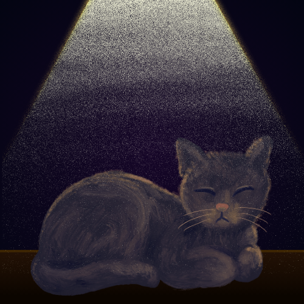

<section id="about" class="m-8">
    <div class="p-8">
        <h2 class="text-3xl/8 md:text-2xl/8 mb-8 font-bold">Tis The Morrow</h2>
        <div class="text-xl flex gap-10 flex-col mb-4 md:text-lg"> 
            <p>Tis The Morrow is just a name where all my creations, work, thoughts, and such go. Me (Eero) is a bootstrap entrepreneur. One with a creator's taste and talent, both a joy and a pain at times. I found something, I believe. Maybe--I don't know. It might be a lie I was convinced to believe...about how beautiful tomorrow can be. Early on, everybody used to say one thing to me-- a depressed kid with a pessimistic outlook-- They used to say, "Life will get better. You just gotta keep on living."</p>
            <p>And I guess, that motto turned into, "Well, you're still here," so, maybe I was convinced. Maybe I'm stuck convinced that tomorrow is something to live for even as promise turns into survival glory.</p>
            <p>A part of me wants to believe, Tis The Morrow means that I will succeed today. There's a chance I will succeed more today--grow today--delve deeper today. I will reach a goal I have not yet reached today... A part of me thinks Tis The Morrow is a question to everybody of the past: "This is the morrow. I am here. Where's the fulfilled promise? When will I being in so much pain living and even more pain trying to keep living?" And there's no answer. Only that I'm still here and to keep going because all the years prior wasn't enough to ease the pain. The journey here wasn't good enough to stop hurting. It was just walk... Most of it useless. A little of of it contributed to new skills, I suppose. Close to none of it resulted in much though. No bricks stood. No card houses stop falling no matter how many times I stacked the cards and in what way. No...[Sigh]</p>
            <p>I forgot, this was supposed to be an about/intro section...maybe a quick, "Hey, I'm so and so and this is about...blah, blah, blah," all something else to mold...to polish until it becomes less about me and more about trying to be good enough to be on my own damn website.</p>
            <p>I would like to pretend I'm not somewhat myself here: pessimistic, long-winded, overshare-er, melancholic, and full with the not-so wanted parts of real life. Parts that sadden and crack and uncomfortable to deal with, but can be refreshing knowing you did not forget... that part of reality that wasn't covered or molded into something kind but uneasy.</p>
            <p>I mean, buried in the creeks of you--your soul--are all the rough and dirty things. Not dirty as in... a sexual or dark mind. Dirty as in the truths, beliefs, thoughts, urges, sights, experiences, and everything else you did not forget, but did not grow or show because it did not fit the part of you that was accepted and boxed into a category.</p>
            <p>Even when saying what we want to say and out truth, we leave out the parts that we are sure will hurt us. The parts that can get us killed or bashed or strip away everything we need to live. We keep it out--locked out.</p>
            <p>Maybe the point of all this wasn't to give you something quick and digestible to let you know who I might be. Maybe the point was to show you--word by word, em dash by em dash, and repeat after repeat. Maybe if I type enough here, you'll see my rhythm, my mind at work--how I think, how I process, how I stack, and leap then put everything on loop. How it's easy to get lost in typing words just as easy as a speeding mind. How just typing alone can be it's own addicting media.</p>
            <p>...Maybe you'll even begin to see what I mean by tomorrow. Maybe you'll nod to our shared yesterday and today. Maybe you'll learn what Tis The Morrow means fully even if I still don't know--maybe you'll even see the yellow I try so hard to name. Joy untouched. Good feelings and experiences I have never experienced before, so how can I possibly know what yellow is? Well, when I look at tomorrow, all I see is yellow. I might not know what the yellow actually is or what it feels like. All I know is yellow. Yellow...</p>
        </div>
        
    </div>
</section>